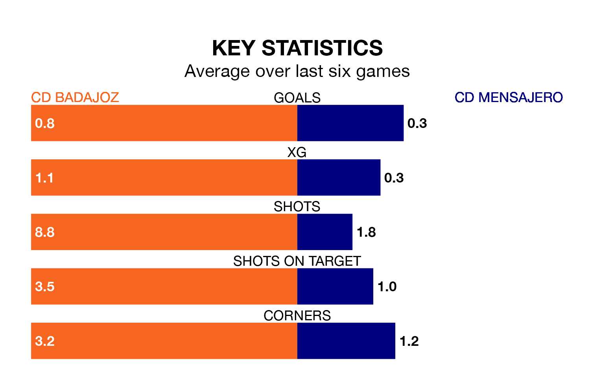

Sunday's match sees two relegation candidates play each other, as 16th-ranked CD Badajoz host 17th-placed CD Mensajero.
Badajoz have picked up 31 points from their first 31 Segunda División RFEF Group 5 games, with six wins and 13 draws.
That is six points more than Mensajero have collected, having won five and drawn 10.
Badajoz are in mixed form in the Segunda División RFEF Group 5, with one win and four draws from their last six games.
With a win and five losses over that period, Mensajero's form is worse – they have taken three points from 18, compared to the hosts' seven.
With 26 goals in 30 games so far this season, Badajoz are scoring at below the league average rate with 0.9 goals per game. And they are conceding at an average rate, letting in 32 goals at a rate of 1.1 per game.
The away side are also below average scorers, with 0.9 goals per game, compared to a league average of 1.1. They have conceded 1.4 goals per game.
Badajoz's last match was on Sunday, a 2-1 loss against Gimnástica Segoviana CF, with Alexandro Daniel Toscano Llordal getting the goal for Badajoz.
Mensajero lost 1-0 against Getafe B last time out, also on April 7.
Updated: 14:47 (UTC), 09/04/24